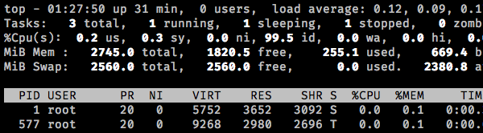
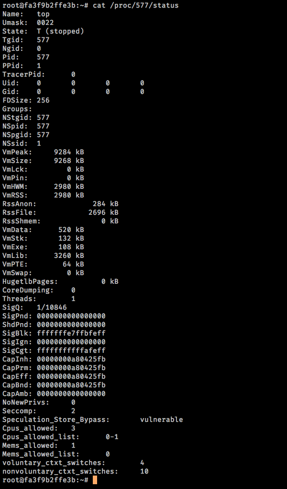

These are things in my head, don't take them too seriously. Bear in mind that, actually, I have no idea what I am saying.
Everything is a File
That title is most likely an oversimplification
but we tend to do that because it makes things easier. Layers over layers. Sometimes I wonder if the organization of reality actually determines the organization of neurons. If so,
would reorganization of neurons change our perspective of reality? Wouldn't then new knowledge change our perspective? I'm tripping again.... In Unix-like operating systems, what it says is, everything is represented by a file.

Top output
Take for example the above. I'm running top as an example. You can see that the PID is 577. This process running right now
Isn't that fascinating? The future is unknown. The past is gone. The present doesn't exist.
. We can see some details at /proc/PID/. For now, let's do the status.

Proc status for PID 577
Even though it's a process running you can see its file representation. You can do even more i.e. /proc/PID/fd/1 and see stdout among other things.
All that makes me thing about Category Theory but I think it has become an unhealthy obssesion.
On Salary
I don't understand the salary negotiation strategies or salary negotiations for that matter
I tried to find a root, you can see the diagram above, but there are too many connections.
. It makes sense, I pressume, if we taking into consideration that we are still in the jungle and we make
of things as the only way we can: The weak are meat and the strong do eat
I love very much the way Tom Hanks spits those words in Cloud Atlas. You can feel the meaning right there.
.
Do you know that plants go to war? Those plants that were being eating by pests and did not evolve any defense mechanism are no longer part of reality.
Stress, in order words, force some plants to evolve chemical compounds that serve as toxins, signal an escalating attack, and solicit help from unlikely alliesDo read. Within us, there is a constant war going on and yet we perceive ourselves as individuals. Before this so called civilization, we had to worry about eating, mating, sleeping and not get eating. Now, we have created a whole new best. This... system of ours baffles me every day.
I see the economy as the humanmade jungle at least in the capitalist context. Communism seems too advanced for a monkey in a suit.
A naive comparison between humanmade jungle vs nature.
Humanmade
Nature
Those with capital, can continue living
Those with skills, can continue another day
Those with more money, can make more money, eat better, have more options
Those stronger, get to eat more, mate, and be stronger
Those with more money, can work less, less worries
Those stronger, can be lazy and not get eaten
Those with more money, can have better health
Those stronger, can live longer
Those with more money are more powerful
Those stronger rule
There are more analogies and yeah some might not be a right example but I think you can get the idea. This is a jungle and if you want to play the game, you gotta know the rules
You can also not participate and go back to the actual jungle. It's most likely better. I hope one day to go back and be a hunter-gatherer.
.
Now, money. It's the energy you need in this game to keep on going. One way to earn it is by spend actual energy. You can also steal, cheat, or be the President of Mexico.
If we consider the legal way, then we are talking about a salary. You do this for me and in return I give you a salary. Salary can be a representation of value...
maybe it's all there is, I dunno, I'm not a bloody economist.
If you are a coal miner and you get the coal, you get a salary. The value is in the coal and somehow you, the miner, get a tiny bit of that value.
The owner(s) of the company get(s) more value by doing... something. Yeah, to me, it makes no sense but whatever I'm not a social warrior,
I'm a coward and I'm here to talk about salary negotiations and how I don't understand them.
At some point the coal miner, let's call him John, wants a raise because well it's stupid to live in a society with that kind of salary.
The company hears John's request and the negotiation starts.
Hold it. Why it has to be negotiation? Doesn't make sense to me. In order for John to continue surviving he needs the money.
In order for the company to make more money, it needs Johness and Joanes.
Wouldn't, then, it be in the best interest of the company to raise John's salary? In the long run, it's better for both parties, no? I think that the company will
make a profit and employees will be happy. What am I not seeing? It's straight forward. Is it envy? Is it power? Is it control? Is it a way to incentivate employees? Is there a limit to what
can money do in terms of motivation?
Is it possible to have a civilization where all humans earn the same amount of money? One of my thoughts is that for some envy will rule. For some other, like myself, I wouldn't care for it.
I mean, I'm pretty sure there are people right now making far more money than me with less skills and I really don't care. Nonetheless, I doubt people see things as I see them.
Maybe an Utopy is not possible not because of resources but because there is no way to go up from there and we, humans, need to keep on going...? Do we really want an Utopy?
Why do I need to negotiate a salary? Why do I deserve more than someone else? Do I deserve more? To what purpose? I ended up having more questions than answers and the diagram just made
things worse.
But it got me thinking about all those brilliant minds with ideas of creating things for a better future for humanity, the planet, other species, etc... how many of them haven't got the support
to build those ideas. I wonder if I only I were a billionaire or is it is inevitable to corrupt yourself? There are 7 billion human beings... How is it we are not conquering the galaxy already?
Service Object Pattern
Recently, I needed to add a new tiny authorization feature to the controllers of a Laravel application
I never understood the PHP bashing but hey I'm not a software engineering so I'll my mouth shut.
. And since I was adding new stuff, the rule was: whatever I touch, if it's awful, refactor it first. I follow rules until I break them. In this case, the rule was a good rule.
So I dived in. and I found something like as follows:
publicfunctionstore(Request$request){/* * a few lines */$order=$this->createOrderAsSale($request);
$order->save();/* * a few lines */}
The function was ~40 lines in total. There were a couple refactors I did but for the purpose of this post, I'm focusing on Service Object Pattern.
The programmer who coded this was apparently a junior which it made sense since the code I saw
Well... I'm sure about that but complaining right now I find it unfair since he can't defend himself. Moving on.
. He decided to create a Trait and move the logic of createOrderAsSale in it. The controller was working just fine so my job was to add my authorization feature.
I'm not an Laravel expert so I spent a few days learning the Laravel ways. The first thing I did was to change the function parameter to:
Laravel recommends to add a form request for complex validations. This, however, was a complex validation but I decided to
add the form request anyway since it has the authorize function in itself by default.
After I added the form request, it was quite simple to integrate the authorization feature. I added it and now I have to add controller tests (there were none at that moment).
The authorization feature had unit tests already in place. I just needed to add test for the controller store action since there was no controller test and I just added new lines of code (remember the rule).
I knew the controller was doing already too much but I didn't think refactor a priority right now since I needed to deliver this authorization future. I changed my mind though once I tried to add unit tests for the controller store action.
The controller should get a request and delegate whatever needs to be done to other classes/services. This wasn't the case.
Not only it was not the case but there was a trait and as far as I can tell we should add a Trait if we find ourselves repeating a lot of functionality across many classes or
to encapsulate useful functionality that we can add to our classes on an as-needed basis. Also, Traits suppose to be use inside a class.
So, I thought of the current code base. I have a controller that gets a request and do stuff either on its own or through a trait that is used only by this controller.
The trait basically takes information as add that information to a new record. After that, it returns the initialized that later the controller save on the database. Hmmm
No, I told to myself. The trait makes no sense. It's not reusable. It does not do what it says it does namelich it does not create an order as a sale.
This needs to be updated, I decided.
First, I got rid of the Trait and I chose a service object pattern. The class will have only one public function called call.
The function will be static. The name of the class will be CreateOrder and it can be used as follows:
CreateOrder::call($request)
That change made immediately easy to unit test the controller store action. I just needed to test the store action, mock the class CreateOrder, test for bad and good order creations and done. I can then add a unit test for the class
CreateOrder later.
I like very much the Service Object Pattern because the convention follows, I think, name the class by telling what it does.
And we lowered the entropy bit...
CYP1A2
Since I was a child I have always have these depressions moments. I dunno why or how they happen. I tried to journal about it at some point to recognize patterns but nothing came through.
I remember my parents wanted me to go to the psychologist but I refused. I didn't want to know I was crazy or fucked up up there.
You can imagine a quite moody teenager. I dunno how I didn't end up being an emo or goth. I think since I tried to rationalize it somehow I overcome it. I still have those moments.
And I think that's also the reason why I ended up being a pessimist philosopher kind of guy.
Last year, I decided to get my DNA tested
I don't recommend it, though. There is a lot of shit in there that I needed to cope with. And at least for me, it was a hard process. I'm still on denial of a few things.
. After a few weeks I got my raw data and I started using it in websites that provides you more information based on markers and what-not. Before that,
I already knew that coffee helps to keep depression aside. I don't drink too much coffee, though. I prefer earl grey tea (black tea) which also have caffeine.
So, It turns out I have a gene called CYP1A2 which translates into Likely to be a fast metabolizer of caffeine. I'm also have other genes like ABCG2, BDNF, MLXIPL, EFCAB5, CYP1A1, GKCR, AHR1, and AHR
which basically means tendency to consume moderate amount of coffee. I guess my will is stronger since I don't drink that much caffeine.
I remember El Poderoso
He used to be called like that because legend has it he met El Diablo, a man with no face and no human feet. El Diablo bowed before him, my grandpa, hence the nickname.
, my grandpa from my 'amá's side, used to drink a lot of coffee. I guess I got that from him.
The Value Of
WARNING This is some fucking rant about freelancing, economics, capitalism, nature, and the fuck what else I will be connecting. So, if
you are already having a bad time reading this, move along
I don't mean to be disrespectful, I mean, come on, not even me wants to read rants. But like Cosmo Kramer said once this is the place to be.
And in here, I feel I can release all this bad energy and stupid thoughts that have no benifit to anyone but me.
. Los geht's.
I live by
Laß dir Alles geschehn:
Schönheit und Schrecken.
Man muß nur gehen:
Kein Gefühl ist das fernste.
That is because I don't think there are wrong feelings, maybe there are wrong actions. I try not to get involved
In college, friends called me The Opinionless.
I let every one and any thing be regardless of what may involved. I don't think is the best philosophy but it's the one that I choose to live by.
A couple of years ago, I got into a company that outsource developers for companies in need for workforce in the U.S.A, let's called the Ninja Company. The business model of the Ninja company is to
outsource great latinamerican developers to work for companies in the U.S.A. who presumably can't afford the price of a U.S.A. developer. Somehow, the Ninja company believes they are providing
top quality development
I believe there is great talent everywhere. I'm not bashing latinoamerican developers.
for a good price. The Ninja company said it's fair. The Ninja company says this like they are running a fucking charity
I'm not bashing charities either. This is a fucking rant. I'm pissed off.
.
Natürlich, the Ninja company provides you with a contract. One of the clausules is that once you work for a company through them, you cannot work for them unless is through them, always.
A.Y.F.K.M?. Not only they pay way less than a U.S.A. developer, they also reserve the right to block your future collaborations. I'm assuming it's a way for them to protect themselves... really?
I accepted the contract, anyway. I needed the money but it got me thinking. I worked for them around 7 months. I saw all kinds of things: white lies of what I'm capable of doing, zero process related to IT stuff,
the interview process to work for them was... quite simple. I doubt it provides you insights of what a developer can actually do.
But hey... I'm not a saint. It worked for me and it paid the bills. I'm part of the problem. Because of people like me the industry abuses developers
Even though I disagree with literally everything Trump does and says, I do believe he was right about why U.S.A IT companies hire people from outside, they are cheaper.
.
Lucky me, I got a job in mother Deutschland so I quit and move to the next adventure. While I was working in Germany, one of the client I had in the Ninja company looked for me. I honestly blocked
that part of the contract of not working for the companies (I guess I was so pissed off that I erased from my memory). We talked and we agreed on a price (still low, though).
In the beginning, I noticed that the client, let's called it Scott, was very insecure about its capacity to make code. It didn't bother me because who the fuck am I to judge such thing. So I let it pass.
At that moment we were three developers. During a couple of months, Scott fired the other two. It was just me. Apparently I was doing a great job (and cheaper too). There were a few occasions where
I saved Scott's ass. And Scott did recognize that. However, at some point Scott found code that it was a mess. Scott decided to code the frontend even though Scott knew shit about design patterns in anything.
I let it pass only to learn a few weeks later that the code I did I needed to put it back on. Scott said I didn't understand it
No shit, Sherlock, really? Fucking asshole.
. Did I start coding again the frontend? No. I was tutoring Scott on how to do things from time to time. At that moment, I started to believe there was a hidden reason.
Later, Scott got a external project contract (I was working on Scott's project). The project was sold within an unbelievable and unreasonable time scope. And of course, he was getting paying.
I dunno how much but Scott said goooood money. The frontend was being coded by Scott
I decided not to look the code. I assumed it was written con las patas.
. Me, I got the backend.
The project had no structure when it comes to sprints, user stories, design ready, prototype. For month, the requirements where changing a fucking lot. The project, to me, was doomed.
Again, I'm not innocent. I needed the money
I wasn't getting more money, of course. My time was distributed into Scott's projects and this new project.
.
At some point he got a DevOps guy from Ukraine to handle some things of Scott's projects. Once, Scott started complaning about some things that was total lies
Scott speaks in a way that according to Scott, it means nothing. Yeah, thousands of years of languages evolving to come to the conclusion that words mean nothing. The fucking fuck.
How to make sense of what Scott is saying if it means nothing? How the fucking how?
. Poor Ukraine guy. I felt sorry about him.
Back to the project Scott took. During the whole bloody project, Scott complained about how the product manager was so stupid doing his work. Nowadays, I believe Scott was projecting itself. It
was literally word for word of what Scott was doing totally wrong. Scott capacity to be self-critic baffles me today. Everyone was fucking wrong except him
I'm starting to see why people see gringos the way they see them: assholes.
.
Then something happened. I think he knew I was pissed off that Scott showed off some abandonment issue. One day I was just busy but Scott went haywire. Scott started saying shit about stuff like a
crazy conspiracy theorist. Scott was connecting shit that in the beginning I gave Scott the benefit of the doubt. On a second thought I realized Scott was being bat-shit crazy.
After that day, I just went say-just-the-minimum-necessary mode. I didn't want to feed the troll. I just wanted to work, get my things done and get paid for it. Dealing with insecurity issue and what-not
was about my rate.
Scott noticed it and sort of did the same. Until one day he started bashing me. For the record, I'm not perfect, I have my issues. In my defense I was dealing with a couple Scott's projects plus that
other project of Scott. The switching between work was not good specially when Scott's skill for making the decision was... well, shit. So my flow got fucked up every single day. Honestly, I dunno
how I manage to code something good enough. But that's my fault, I should've stopped Scott but I didn't.
So, Scott was bashing me on my stuff with zero regarding of the situation. It was literaly a personal attack. The bashing didn't bother me. I don't care about people's verbal attacks. What got me
was that I realized how fucking delusional Scott was.
And that was it. I just quit. I couldn't take it any more.
Of course, things aren't that simple. I can't just blame others specially when I was there there on my own choosing. Nobody put a gun against my head. It made me realized about a few things.
Why companies/bosses do that? Why the take advantage of the employees? Don't they see that a happy employee brings them more income? If the whole point is to increase the capital? Boy, I think
most companies are doing a bad job. If they are making billions, I bet they can get more money by making employees happy. I'm premise is that the productivity increases.
Why is that the salaries are sooo disproportionated? How is that we as a group decided to value this more than that? I'm not trying to fix the economy. What the fuck do I know about shit. However,
I have always find gold and jewelry stupid. I dunno why people value things like that. It's not like they are using gold as a superconductor
ARE THEY!?!?
.
Sometimes I think that Communism doesn't work because you need smart animals and humans are full of biases and ego.
How is that a fucking pen costs more than 2 month of food and rent in Mexico? Why the fuck rice in Mexico is cheaper than in other countries? I know the usual answers but I think that's not an answer.
It's more like a justification to things keep being like that.
I dunno how but my brains is yelling right now: We can't keep growing like this. We can't keep having this progress. Progress is the greatest illusion of this human civilization.
And on that note. I will consider this rant done. I'm done.
The Interview
I'm one of those that complains about how terrible the interview process, at least in the IT context, is. I have had quite a few interviews. I have seen many diff stylists.
They have left me with a taste of disatisfaction. The sad thing is I dunno how to fix it. I guess it's one of those art that's have to master.
Now, a few days ago I have what I considered The Interview of my life
Before I wrote this, I tried to look for a word that expresses my feeling but I'm bad at expressing feelings so I'm sure it's easier to find the origin of the Universe than the word.
.
I'm also the kind of people who complain about other peope saying it's just business as in they want to separate human emotion from the equation.
Every time I hear that, I can't stop thinking they are just as bad as dealing with emotion than everybody else. So, it's easier to disassociate yourself.
What was so great about that interview? We talk about my failures and vulnerabilities. No ego. No superiority complex. No fear to be exposed. They were so open and understandable. I felt so
fill-with-a-word. I really don't know how to to call it. it was an amazing hour.
I knew however I wasn't the right fit. There are most likely far better people than me... by millions. But I wanted to try, you know? In the end, I think I won.
It's a shame, I believe, more companies don't interview like that.
The Interview.
Alle Dagen Heel Druk
For people like it's hard to find the right music to get into it
called as you wish: zone, flow, nirvana, the place to be, etc. I find myself in the world I can be for many hours.
. I have finally finished creating my master piece. This natürlich only works for
my particular brain.
But hey, it's music, maybe you enjoy it too as for what it is: patterns all the way down...
I like Rust lang very much. I started using it a couple of years ago to create a crate. And I'm pretty sure the
code is the worst in the Rust community. I mean, I was learning after all. What do I regret, though, is not the bad code, that happens. I regret that I just did the crate but I didn't
continue using Rust at all after that.
So, a few weeks ago I decided to continue with my Rust learning.
The logic of the library is pretty simple: any request you make to a third-party service will be controlled by Bouncer. Bouncer will deal with delay/throttle the requests as needed.
It uses Redis as backend.
The code so far is pretty straight forward:
useconfig::{Config,ConfigError,Environment,File};useserde::Deserialize;usestd::env;usestd::path::PathBuf;#[derive(Debug, Deserialize)]structRedisConfig{server_url:String,script:PathBuf,}#[derive(Debug, Deserialize)]structSettings{debug:bool,redis:RedisConfig,}implSettings{fnnew()->Result<Self,ConfigError>{letmuts=Config::new();s.merge(File::with_name("config/default"))?;letenv=env::var("RUN_MODE").unwrap_or("development".into());s.merge(File::with_name(&format!("config/{}",env)).required(false))?;s.merge(File::with_name("config/local").required(false))?;s.merge(Environment::with_prefix("app"))?;s.try_into()}fnredis_script(&self)->PathBuf{self.redis.script.clone()}fnredis_url(&self)->String{self.redis.server_url.clone()}}useredis::RedisError;#[derive(Debug)]enumError<'a>{IncompatibleJson(&'aValue),InvalidJson(&'aValue),}impl<'a>From<Error<'a>>forRedisError{fnfrom(v:Error)->RedisError{matchv{Error::IncompatibleJson(m)=>RedisError::from((redis::ErrorKind::TypeError,"Response was of incompatible type",format!("Not JSON compatible (response was {:?})",m),)),Error::InvalidJson(m)=>RedisError::from((redis::ErrorKind::TypeError,"Response was of incompatible type",format!("Not valid JSON (response was {:?})",m),)),}}}usestd::time::Duration;#[derive(Debug, Deserialize, PartialEq)]pubstructBouncerStats{old:String,current:String,since:u8,wait:Duration,}implDefaultforBouncerStats{fndefault()->BouncerStats{BouncerStats{current:0.to_string(),old:0.to_string(),since:0,wait:Duration::from_millis(0),}}}useredis::{FromRedisValue,Value};usestd::result::Result;usestd::str::from_utf8;implFromRedisValueforBouncerStats{fnfrom_redis_value(v:&Value)->RedisResult<BouncerStats>{letrv:RedisResult<BouncerStats>=match*v{Value::Data(refd)=>{letresult:Result<serde_json::Value,serde_json::Error>=serde_json::from_str(from_utf8(d)?);letv:BouncerStats=matchresult{Ok(value)=>{letarray_wait:Vec<serde_json::Value>=matchvalue["wait"].as_array(){Some(value)=>value.to_vec(),None=>vec![serde_json::Value::Number(serde_json::Number::from(0)),serde_json::Value::Number(serde_json::Number::from(0)),],};letseconds=array_wait[0].as_u64().unwrap();letmicroseconds=array_wait[1].as_u64().unwrap()/1_000_000;letduration=Duration::from_millis((seconds+microseconds)asu64);letcurrent=matchvalue["current"].as_str(){Some(value)=>value.to_string(),None=>"0".to_string(),};letold=matchvalue["old"].as_str(){Some(value)=>value.to_string(),None=>"0".to_string(),};letsince=matchvalue["sice"].as_u64(){Some(value)=>valueasu8,None=>0,};letbouncer_stats=BouncerStats{current:current,old:old,since:since,wait:duration,};bouncer_stats}Err(_)=>BouncerStats::default(),};Ok(v)}_=>Result::Err(Error::IncompatibleJson(v))?,};matchrv{Ok(value)=>Ok(value),Err(_)=>Result::Err(Error::InvalidJson(v))?,}}}useredis::{Client,RedisResult,Script};usestd::fs::read_to_string;usestd::thread;#[derive(Clone)]pubstructBouncer<'a>{pubkey:u8,pubrate_limit:u8,pubwait_time:u8,pubblock:&'adynFn(),}impl<'a>DefaultforBouncer<'a>{fndefault()->Bouncer<'a>{Bouncer{key:1,rate_limit:5,wait_time:2,block:&||println!("Nothing to excucute"),}}}impl<'a>Bouncer<'a>{pubfnnew(block:&'adynFn())->Bouncer{letmutbouncer=Bouncer::default();bouncer.block=block;bouncer}pubfnkey(&'amutself,key:u8)->&'amutBouncer{self.key=key;self}pubfnrate_limit(&'amutself,rate_limit:u8)->&'amutBouncer{self.rate_limit=rate_limit;self}pubfnwait_time(&'amutself,wait_time:u8)->&'amutBouncer{self.wait_time=wait_time;self}pubfnrun(&self)->RedisResult<BouncerStats>{matchSettings::new(){Ok(settings)=>{letraw_script=read_to_string(settings.redis_script())?;letscript=Script::new(raw_script.as_str());letclient=Client::open(settings.redis_url())?;letmutconnection=client.get_connection()?;loop{letbouncer_stats:BouncerStats=script.key(self.key).arg(self.rate_limit).arg(self.wait_time).invoke(&mutconnection).unwrap();ifbouncer_stats==BouncerStats::default(){(self.block)();breakOk(bouncer_stats);}else{thread::sleep(bouncer_stats.wait)}}}Err(error)=>panic!(error),}}}
The good thing about this project is that I've been mentored by Jane, shout out to her!
It's a working in progress, natürlich. Leider, I recently decided to cut out one of my incomes, a freelance gig. It was bound to happen, I just wasn't happy with the gig anymore.
It was a interesting adventure which the deserve is own post
It will be sort of a rant. I saw the signs from the beginning but the money was good (altought other friend coders said it was one third of what I should be charging).
But money doesn't buy happinness... right?
. Anyway, I've been working on demos for companies but a day only have 24 hrs and even though I like coding... my biology hits hard when I don't sleep enough.
The whole idea of having best practices and design patterns is to avoid chaos
Did you know the opposite of Chaos is Cosmos? sigh. A Builder, as the word says, it builds thing or things. In Bouncer context I moved from this
The most obvious thing is that it's quite readable. In both cases, you will need to read Bouncer API. The differences is that in the first version,
you will need to remember every time the position of the params (and params' name) when passing them along to the function. In the second version,
you will need to remember the names of the params, the order of how you call them is not relevant. It saves effort.
In physics and mathematics, you want to write less
Remember, every thing seems to follow the path of least action.
. So you create equations and those equations are compacted into a less wordy equations and so on and so forth.
Something similar, I believe, happens in computer science. You want to create code that humans can read but at the same time you want code that does not make invest more effort than necessary.
One thing that I find fascinating (that somehow is connected to this is post) is Life seems to be all about low entropy. And... at least when I try code in my head I have this principle:
try to make the code less chaotic (high entropy) because I know that future me will hate myself (not to mention that probably other coders will want to kill me).
In almost every project I end up using at some point the Service Object pattern. I like
because of the convention of naming the class with what the PORO
Don't you love acronyms? I certainly do. To me, it's the similar abstraction like verbing nouns i.e. google it instead of go to the internet and use the search engine Google to find it. The word Internet is another one. This is fun.
does: CreateRefund.call. You know by reading the class name what's happening in same or what should be happening inside.
However, I don't follow all the rules. For example, I don't create a class but rather a module. Instead of doing the following:
Notice that I try not to use the name of the pattern in the class name.
The reason is because the pattern name will be visible in the backtrace. When it comes to your IDE, the class will be inside app/services. The redundancy is not needed there.
Now, why do I use module instead of a class? To be honest, my answer has not evidence to back it up. In fact, that's the reason of this post, to find out how my beliefs are wrong
or perhaps right, I dunno. My reason to choose a module instead of a class was because I didn't want to initialize more objects (less object creation).
I have never done the benchmarks. I only know that modules are not initialized. is it, though?
From IT Crowd TV show
First, some benchmarks in with two dummy functions:
Huh! Ok, there is a difference. I'm more curious though in the amount of instantiated objects.
Rehearsal --------------------------------------
m 0.000011 0.000007 0.000018 ( 0.000009)
c 0.000009 0.000002 0.000011 ( 0.000010)
----------------------------- total: 0.000029sec
user system total real
m 0.000011 0.000002 0.000013 ( 0.000006)
c 0.000011 0.000002 0.000013 ( 0.000008)
So, Module and Class have the same class. What does the superclass method do? Returns the superclass of class, or nil. Although, the superclass method is only in Class not in Module.
And that's how this mystery appeared in the first place.
Automate or All Tomato
I like games. I like them very much. I recently had a tattoo made in my right forearm to illustrate my love and admiration for Horizon: Zero Down
specially for Aloy. If I were a woman, I would be Aloy hence a tattoo of her in my arm.
I also love games like Shenzhen I/O and Factorio which leads me to automatization. I'm not sure
we want to automate everything anymore
I found this in Jess's blog. I'm sure she wasn't advocating to automate everything but it got me thinking.
.
We gain more time but my question is for what. Man könnte argumentieren for whatever you want
which sounds like a great answer and one could imagine all things we would wanted to be done but I don't think that's the case.
Why do you think new years resolutions are hard?
Why do you think people need religion?
Why do you think gringos are afraid of robots or bad hombres taking their jobs?
I think the answer to all those questions comes from the same root: humans need meaning.
They literally are made of meat but this is thinking meat. And the part that does this thinking is a
pattern recognization machine. To work, it needs input. It has sensors of all kinds. But if you deprive
those sensors from input, it goes haywire.
It is not that simple since there are many layers but the underlying mechanics is like that. Finding meaning
or the act of finding meaning is in itself a pattern. From A to B. If there is no A nor B, then what to do?
The ape-descended being start asking questions... remember this is a thinking meat. But this thinking meat
most likely has no answers. And this is not good. It's not good because the thinking meat cannot go back
to not thinking unless it's a thinking meat monk or something.
So, back to automatization. People need to struggle. Then what to automate? What we need to leave untouched?
Keine Ahnung. But my bet is it will happening the same as we are currently living: a society where religion is disappearing
and humans are losing ground and most humans need a ground or they will go haywire.
Hyperfocus or how I learned to stop worrying and appreciate my pitfalls (also Alle Dagen Heel Druk)
I like Dr. Strangelove. I find it to be a great satire not only of cold war but humans themselves
I mean, think about it. We have three major problems in the past: energy (food, water), reproduction, and not be be eaten. Now, for non-poor people, you have all of them covered and somehow you are still miseable.
I think the trade-off was not justifiable. And if you go deeper, it might be the main reason of this overpopulation. Talk about denial of death, am I right, people?
.
That's the reason for the title + it fits perfectly. So, Los geht's.
In Nov 2019 I learned that I went to therapy when I was a child for like 3 years. I don't recall any of that but 'Amá chose to share that piece of information before I moved to Germany.
Apparently, I have short burst of rage and lots of energy. I remember in kindergarden to be quite active and get bored easily... a lot.
In my teenage phase, I attributed all my issues to being a teenager. I was very sensitive to people's comments about me. I got overwhelmed by crowds regardless of relationship I had with them.
I prefer to be alone more importantly, to be alone on the roof watching the stars. I kept me calm. Computer games helped a lot but school was in the way, I only had interests in patterns (math).
For the rest of the classes I was a bad student.
Then the time to go to university arrived. I was a still shy and lonely person but I made friends. These dudes where somehow like me. I studied physics.
From time to time, there were parties but I couldn't stay longer, I got weirded out. It was me of course but I dunno why I assumed that would faded it away.
Somehow, can't recall how, I learned to deal with my emotions and my sensitiveness. I learned to control my levels of energy. And I noticed that I liked coding, a lot. I learned that I can spend
hours in front of the computer just coding away... hours. So, I became a coder, programmer, a dude who whispers to computers.
Until Aug 2020, I gave me a present: a DND test for ancestry, diet and mental disorders. I did it out of curiosity. I already knew there was sefardic descendency. What I didn't know was that I also have ashkenazi descendency.
There is also Filipino, Manchurian, Coptic Egyptian, Senegambian and Angolan. Being mexican is truly a mezcolanza
I wonder if that's what makes of the Cosmic Race. is there such thing as race?
.
What got my attention was the mental disorder part
The diet part too. Apparently for my genetics it's better to follow the Nordic Diet. I guess I was meant to move close to the North pole jiggles.
. The analizes says I have a lot of markers for ADHD, some for OCD and some other for Autism
I forgot to mention before but I also have a constant sort of depression. I battle that by working a lot and find ways to distract myself which it's hard since I get bored easily.
. I did know those mental disorders but I wasn't aware of all the details of each one of them.
Let's start with OCD. It makes sense. Sometimes I have burst of making things in order, symmetrical and beautiful aesthetic to the point that people get annoyed by me, I'm sorry.
Autism. I might. I doubt it, though. The only thing I can think of it's when people say that I'm rude in some conversations. What they mean is I say things as they are instead of sugarcode them.
But the ADHD... this one makes quite a lot of sense. It brought me peace to many of my personal issues. It brought me resolution. It wasn't easy, thought. I was in denial for days. I wanted to be normal
even though I knew I was fucked up.
After a few days I made peace with myself. I realized that it might not be so bad. I also realized this might be why I like coding. Coding is hyperfocus to me. Coding is heaven. Coding is my happy place just like
that roof and the stars. It can be a superpower, I just need to learn how to harness it.
So I stopped worrying.
Humans, the final frontier
I have this crazy goal. So crazy that I think I just went mental.
The physics of the goal is not the hard part to solve but rather humans, how to take humanity the next level
and also be prepared for it... htf?
Obviously, to travel faster than light, to create wormholes, to contract the spacetime continuum, to find ways to get exotic matter, it is hard.
But if I'm saying humans are the big challenge, it's because in my head is more easier to solve technical problems than humans and their egos/biology.
Owning your Failures
Just like history is written by the winners, I think the whole achievements thing is also the same thing. We hear about this and that and how great. But
rarely we hear about the failures. We hear about failures when it comes to shame someone or to feel superior
How you noticed there are people waiting to be offended or to jump into crazy conclusions just to denigrate someone? Jeez...
.
That made me think that we are not teaching how to own your mistakes and failures. It took many years to finally start talking about them openly like it was nothing.
It's weird, don't you think? After all, we learn by failing
In fact, my bet is that we can only learning by failing or rather things are only things in comparison to something else.
So, winning is one side of the coin and there can only be a coin with two sides hence failing. To things to be computable, to compute, there's gotta be more than two.
.
Imagine doing that in job interviews? I did, just a couple of times. And as you probably expected, it wasn't a good thing.
I mean, it wasn't seen as a good thing by the interviewer. I was totally fine with it.
Fallibilis
In these turbulent times, I can't help to feel deceived.
It's nobody's fault. I don't think that anyone has deceived humanity with bad intentions.
Here I am listening to Kate Bush's Cloudbusting... and It makes me feel... It reminds me to that moment
when I learnt that adults are fallible. How fragile humanity is
I happen to believe the ultimate greatest lie of this human civilization is... Progress.
.
This is the moment when I wish there were gods and goddesses. Aliens, if you will.
Someone who could save us from our childish behavior and premature use of technology.
And yet I just know that something good is gonna happen.
Make a meaningful living
Tomorrow it's my 37 Sun cycle which it's only special to me and probably my mom
I don't recall having a birthday party. 'Amá tried to compensate that by giving me birthday parties lawter. It didn't work. I felt super awkward and overwhelmed.
Although that might be because of something else in my head.
.
Like any other human being or sentient being, I broke some many bubbles so far. So many illusions
we have created as a civilization. A civilization being one of them. Gosh. So many lies.
However, I think that in a reality without meaning, you have the power and responsibility (if you want to be sane) to create
your own meaningful way of living.
In my case, it sums to the following GIF I made.
Some awesome random cat from the internet.
I'm not smart
Like any developer, I have done a lot of interviews. The interviews are a bit diff, I think,
since I have no computer science degree. I'm a physicist by training. Some people may think
that probably means I'm smart. I am not.
One of the things I learned as a child was that I'm not smart. I'm not wise. I'm not intelligent.
There is nothing special about me and there are far more better people than me in any area.
I forced myself to live with that. It's hard since family and friends say otherwise but that, I
believe, does not help me at all.
At my age, I've learned to live with that. It's sort of sad since I know I'll be behind. I'll
be left behind. It's hard to accept that but I'm ok with the logic of how Nature/Reality seems to work.
I recently had to decline to continue with a process with a company because its process involved
challenges like the ones you have at Facebook, Amazon, Google, Microsoft, you name it. They also
wanted to know how much time it took me to solve the problem. To me, the company wanted the best of
the best which, well, I am not
I have also the idea that those sort of interview processes provide so little information about the person but I think it's my ego trying to not to get hurt.
.
I could have fake it. Nowadays, you can find anything on the internet and I'm positive I could have
found the solution. To what end? I'm not smart. Cheating won't make me smart, I think. It was not even
about being honest. I doubt I'd be smart by cheating.
I like to believe that what I have cultivated is, that for most things, I don't need to be smart, I just
have to be careful. I doubt I'm the best but I do think I best myself every day.
Script Tag, Programmatically
A very hackish
I find it hackish too but things being hackish or impossible has never been a reason for me not to do it...
way to get and insert a script and its content. I like it because what it represents in terms of physical space but I'm aware software engineers find it hackish.